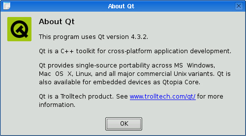
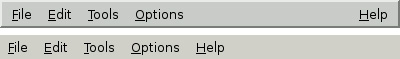
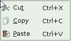

Most modern GUI applications provide menus, context menus, and toolbars. The menus enable users to explore the application and learn how to do new things, while the context menus and toolbars provide quick access to frequently used functionality. Figure 3.3 shows the Spreadsheet application's menus.
Qt simplifies the programming of menus and toolbars through its action concept. An action is an item that can be added to any number of menus and toolbars. Creating menus and toolbars in Qt involves these steps:
In the Spreadsheet application, actions are created in createActions():
void MainWindow::createActions()
{
newAction = new QAction(tr("&New"), this);
newAction->setIcon(QIcon(":/images/new.png"));
newAction->setShortcut(QKeySequence::New);
newAction->setStatusTip(tr("Create a new spreadsheet file"));
connect(newAction, SIGNAL(triggered()), this, SLOT(newFile()));The New action has an accelerator (New), a parent (the main window), an icon, a shortcut key, and a status tip. Most window systems have standardized keyboard shortcuts for certain actions. For example, the New action has a shortcut of Ctrl+N on Windows, KDE, and GNOME, and Command+N on Mac OS X. By using the appropriate QKeySequence::StandardKey enum value, we ensure that Qt will provide the correct shortcuts for the platform on which the application is running.
We connect the action's triggered() signal to the main window's private newFile() slot, which we will implement in the next section. This connection ensures that when the user chooses the File|New menu item, clicks the New toolbar button, or presses Ctrl+N, the newFile() slot is called.
The Open, Save, and Save As actions are very similar to the New action, so we will skip directly to the "recently opened files" part of the File menu:
...
for (int i = 0; i < MaxRecentFiles; ++i) {
recentFileActions[i] = new QAction(this);
recentFileActions[i]->setVisible(false);
connect(recentFileActions[i], SIGNAL(triggered()),
this, SLOT(openRecentFile()));
}We populate the recentFileActions array with actions. Each action is hidden and connected to the openRecentFile() slot. Later on, we will see how the recent file actions are made visible and used.
exitAction = new QAction(tr("E&xit"), this);
exitAction->setShortcut(tr("Ctrl+Q"));
exitAction->setStatusTip(tr("Exit the application"));
connect(exitAction, SIGNAL(triggered()), this, SLOT(close()));The Exit action is slightly different from the ones we have seen so far. There is no standardized key sequence for terminating an application, so here we specify the key sequence explicitly. Another difference is that we connect to the window's close() slot, which is provided by Qt.
We can now skip to the Select All action:
...
selectAllAction = new QAction(tr("&All"), this);
selectAllAction->setShortcut(QKeySequence::SelectAll);
selectAllAction->setStatusTip(tr("Select all the cells in the "
"spreadsheet"));
connect(selectAllAction, SIGNAL(triggered()),
spreadsheet, SLOT(selectAll()));The selectAll() slot is provided by one of QTableWidget's ancestors, QAbstractItemView, so we do not have to implement it ourselves.
Let's skip further to the Show Grid action in the Options menu:
...
showGridAction = new QAction(tr("&Show Grid"), this);
showGridAction->setCheckable(true);
showGridAction->setChecked(spreadsheet->showGrid());
showGridAction->setStatusTip(tr("Show or hide the spreadsheet's "
"grid"));
connect(showGridAction, SIGNAL(toggled(bool)),
spreadsheet, SLOT(setShowGrid(bool)));Show Grid is a checkable action. Checkable actions are rendered with a check-mark in the menu and implemented as toggle buttons in the toolbar. When the action is turned on, the Spreadsheet component displays a grid. We initialize the action with the default for the Spreadsheet component so that they are synchronized at startup. Then we connect the Show Grid action's toggled(bool) signal to the Spreadsheet component's setShowGrid(bool) slot, which it inherits from QTableWidget. Once this action is added to a menu or toolbar, the user can toggle the grid on and off.
The Show Grid and Auto-Recalculate actions are independent checkable actions. Qt also supports mutually exclusive actions through the QActionGroup class.
...
aboutQtAction = new QAction(tr("About &Qt"), this);
aboutQtAction->setStatusTip(tr("Show the Qt library's About box"));
connect(aboutQtAction, SIGNAL(triggered()), qApp, SLOT(aboutQt()));
}For the About Qt action, we use the QApplication object's aboutQt() slot, accessible through the qApp global variable. This pops up the dialog shown in Figure 3.4.

Now that we have created the actions, we can move on to building a menu system containing them:
void MainWindow::createMenus()
{
fileMenu = menuBar()->addMenu(tr("&File"));
fileMenu->addAction(newAction);
fileMenu->addAction(openAction);
fileMenu->addAction(saveAction);
fileMenu->addAction(saveAsAction);
separatorAction = fileMenu->addSeparator();
for (int i = 0; i < MaxRecentFiles; ++i)
fileMenu->addAction(recentFileActions[i]);
fileMenu->addSeparator();
fileMenu->addAction(exitAction);In Qt, menus are instances of QMenu. The addMenu() function creates a QMenu widget with the specified text and adds it to the menu bar. The QMainWindow::menuBar() function returns a pointer to a QMenuBar. The menu bar is created the first time menuBar() is called.
We start by creating the File menu and then add the New, Open, Save, and Save As actions to it. We insert a separator to visually group closely related items together. We use a for loop to add the (initially hidden) actions from the recentFileActions array, and then add the exitAction action at the end.
We have kept a pointer to one of the separators. This will allow us to hide the separator (if there are no recent files) or to show it, since we do not want to show two separators with nothing in between.
editMenu = menuBar()->addMenu(tr("&Edit"));
editMenu->addAction(cutAction);
editMenu->addAction(copyAction);
editMenu->addAction(pasteAction);
editMenu->addAction(deleteAction);
selectSubMenu = editMenu->addMenu(tr("&Select"));
selectSubMenu->addAction(selectRowAction);
selectSubMenu->addAction(selectColumnAction);
selectSubMenu->addAction(selectAllAction);
editMenu->addSeparator();
editMenu->addAction(findAction);
editMenu->addAction(goToCellAction);Now we create the Edit menu, adding actions with QMenu::addAction() as we did for the File menu, and adding the submenu with QMenu::addMenu() at the position where we want it to appear. The submenu, like the menu it belongs to, is a QMenu.
toolsMenu = menuBar()->addMenu(tr("&Tools"));
toolsMenu->addAction(recalculateAction);
toolsMenu->addAction(sortAction);
optionsMenu = menuBar()->addMenu(tr("&Options"));
optionsMenu->addAction(showGridAction);
optionsMenu->addAction(autoRecalcAction);
menuBar()->addSeparator();
helpMenu = menuBar()->addMenu(tr("&Help"));
helpMenu->addAction(aboutAction);
helpMenu->addAction(aboutQtAction);
}We create the Tools, Options, and Help menus in a similar fashion. We insert a separator between the Options and Help menus. In Motif and CDE styles, the separator pushes the Help menu to the right; in other styles, the separator is ignored. Figure 3.5 shows both cases.

void MainWindow::createContextMenu()
{
spreadsheet->addAction(cutAction);
spreadsheet->addAction(copyAction);
spreadsheet->addAction(pasteAction);
spreadsheet->setContextMenuPolicy(Qt::ActionsContextMenu);
}Any Qt widget can have a list of QActions associated with it. To provide a context menu for the application, we add the desired actions to the Spreadsheet widget and set that widget's context menu policy to show a context menu with these actions. Context menus are invoked by right-clicking a widget or by pressing a platform-specific key. The Spreadsheet's context menu is shown in Figure 3.6.

A more sophisticated way of providing context menus is to reimplement the QWidget::contextMenuEvent() function, create a QMenu widget, populate it with the desired actions, and call exec() on it.
void MainWindow::createToolBars()
{
fileToolBar = addToolBar(tr("&File"));
fileToolBar->addAction(newAction);
fileToolBar->addAction(openAction);
fileToolBar->addAction(saveAction);
editToolBar = addToolBar(tr("&Edit"));
editToolBar->addAction(cutAction);
editToolBar->addAction(copyAction);
editToolBar->addAction(pasteAction);
editToolBar->addSeparator();
editToolBar->addAction(findAction);
editToolBar->addAction(goToCellAction);
}Creating toolbars is very similar to creating menus. We create a File toolbar and an Edit toolbar. Just like a menu, a toolbar can have separators, as Figure 3.7 shows.